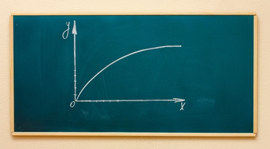

El modelo matemático: La Ley de Paul Janet
Para entender este fenómeno tenemos que diferenciar dos variables: el tiempo físico (\(t\)), que es la edad cronológica que dicta tu DNI, y el tiempo percibido (\(T\)), que es el total de “tiempo psicológico” que sientes que has acumulado en tu vida.
En el siglo XIX, un filósofo francés llamado Paul Janet propuso una teoría brillante en su sencillez: nuestra percepción del tiempo es relativa al tiempo que ya hemos vivido. Para un niño de 5 años, un año representa una quinta parte (el 20%) de toda su existencia. Para un adulto de 50 años, ese mismo año es apenas una cincuentava parte (el 2%) de su vida. Es lógico que el niño sienta ese año como algo inmenso, mientras que para el adulto es un parpadeo.
Si traducimos la intuición de Janet al lenguaje del cálculo diferencial, podemos modelar el ritmo al que experimentamos el tiempo (\(dT/dt\)) como algo inversamente proporcional a nuestra edad (\(t\)). La ecuación queda así:
donde \(\alpha\) es una constante de proporcionalidad que depende de cada individuo. Si resolvemos esta ecuación diferencial mediante integración, buscando calcular el tiempo sentido (\(T\)) desde el momento en que empezamos a formar recuerdos conscientes (fijemos de forma realista los \(t_0 = 3\) años de edad) hasta nuestra edad actual \(t\), obtenemos el siguiente resultado:
¡La percepción del tiempo es logarítmica! Si recuerdas cómo es la curva de un logaritmo sabrás que empieza subiendo de forma muy empinada y luego se aplana, avanzando de manera sumamente lenta. Eso es exactamente lo que le ocurre a nuestra vida sentida: acumulamos minutos psicológicos cada vez más despacio.

El gran cálculo: ¿A qué edad se agota la “mitad” de nuestra vida?
Imaginemos que la esperanza de vida media es de \(L = 80\) años. Si el tiempo psicológico fuera lineal, la mitad de tu vida la alcanzarías a los 40 años. Pero si nuestro cerebro calculara el tiempo con la ley logarítmica de Janet, la pregunta cambia por completo: ¿A qué edad física (\(t_{mitad}\)) habremos gastado ya el 50% de todo nuestro tiempo percibido?
Para resolverlo, planteamos que el tiempo sentido a esa edad intermedia debe ser igual a la mitad del tiempo sentido al llegar a los 80 años:
Sustituyendo nuestra función logarítmica:
Podemos simplificar la constante \(\alpha\) en ambos lados y aplicar las propiedades de los logaritmos (pasar el \(1/2\) como raíz cuadrada del argumento):
Eliminando los logaritmos, nos queda una ecuación sorprendentemente limpia:
El resultado es demoledor. Si el modelo de Janet es correcto, a los 15 años y medio ya has consumido la mitad de toda la vida psicológica que vas a experimentar. El bloque de tiempo que va desde tus 3 años hasta la mitad de la adolescencia se siente tan largo en tu memoria como todo el bloque que va desde los 16 hasta los 80 años.
La redención: Cómo reconciliar el tiempo sentido con el real
A la luz del modelo logarítmico de Janet, el panorama parece desolador: si la infancia consume la mitad de nuestra experiencia consciente, la adultez no es más que una dolorosa aceleración hacia el final. Sin embargo, la propia matemática que nos condena nos ofrece una vía de escape. La clave está en esa pequeña letra griega que dejamos aparcada antes: la constante de intensidad cognitiva \(\alpha\).
Hasta ahora hemos asumido que \(\alpha\) es un valor fijo. Pero, ¿qué pasaría si pudiéramos intervenir sobre ella? Lo ideal sería conseguir que nuestra percepción del tiempo (\(T\)) volviera a ser lineal respecto al tiempo real (\(t\)). Es decir, que un año a los 60 años se sintiera exactamente tan largo y pleno como un año a los 6 años.
Para que \(T \sim t\) necesitamos que el ritmo al que experimentamos la vida sea constante. Si planteamos que \(\alpha\) no es un número fijo, sino que tiene un comportamiento lineal con la edad (es decir, \(\alpha(t) = k \cdot t\), donde \(k\) es un factor de esfuerzo consciente), ocurre una magia matemática impecable en nuestra ecuación original:
Las variables de la edad (\(t\)) en el numerador y el denominador se cancelan por completo, eliminando el efecto del envejecimiento cronológico:
Al integrar esta nueva tasa, obtenemos que el tiempo percibido se vuelve perfectamente lineal:
¿Qué significa esta cancelación en el mundo real? Significa que para ganarle la batalla al tiempo, nuestra actividad mental, curiosidad y búsqueda de novedades (\(\alpha\)) deben crecer en proporción directa a los años que cumplimos (\(t\)).
El cerebro adulto tiende a la automatización para ahorrar energía; cae en la rutina y activa el piloto automático, congelando el valor de \(\alpha\) mientras \(t\) sigue aumentando. Para hackear la ecuación, un adulto de 40 años necesita esforzarse el doble que un joven de 20 en romper la rutina, viajar, aprender habilidades nuevas desde cero (un idioma, un instrumento, un deporte) y forzar a su mente a registrar recuerdos de alta resolución.
El tiempo físico es un río implacable que fluye siempre a la misma velocidad y no podemos detener los relojes. Pero si logramos que nuestra intensidad vital crezca al mismo ritmo que nuestra edad, la fría dictadura de las matemáticas se flexibiliza. No podemos añadirle más años a la vida, pero expandiendo de forma lineal nuestra mente, sí podemos añadirle mucha más vida a los años.

Comentarios
Enviar un comentario
¿Qué te ha parecido? Déjanos tu comentario. Todos los comentarios serán revisados antes de su publicación a fin de mantener un espacio respetuoso, libre de spam y acorde a las normas editoriales.